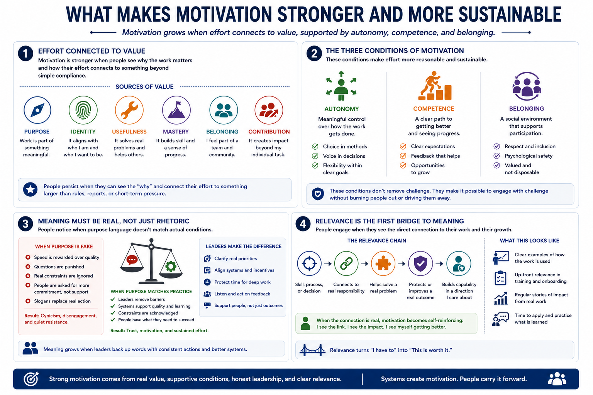

Needs, Values, and Meaning
Connecting to LMS... Progress: in progress

Narration
Motivation tends to be stronger when effort connects to something a person values. That value may come from purpose, identity, usefulness, mastery, belonging, autonomy, or contribution to a real outcome. People are more likely to persist when they can see why the work matters and how their effort connects to something beyond simple compliance.
Autonomy, competence, and belonging are useful ideas for practical motivation design. Autonomy means people have some meaningful control over how they approach the work. Competence means they can see a path to getting better. Belonging means the social environment supports participation instead of making people feel isolated or disposable. These conditions do not make work effortless, but they make effort feel more reasonable.
Meaning should be handled carefully. People notice when purpose language is fake, inflated, or disconnected from actual conditions. Empty slogans can backfire if the day-to-day system rewards speed over quality, punishes questions, or ignores the real constraints people face. Motivation is stronger when the stated purpose matches the work environment and when leaders remove barriers rather than only asking for more commitment.
In learning and workplace performance, relevance is often the first bridge to meaning. People need to understand how a skill, process, or decision connects to their actual responsibilities. When the connection is real, motivation becomes less dependent on hype. Learners and workers can say, this is worth effort because it helps me solve a real problem, protect a real outcome, or become more capable in a direction I care about.